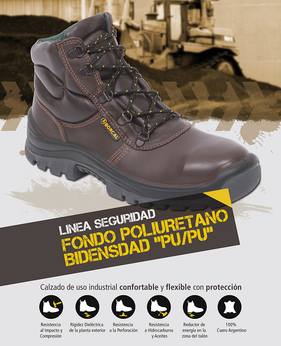
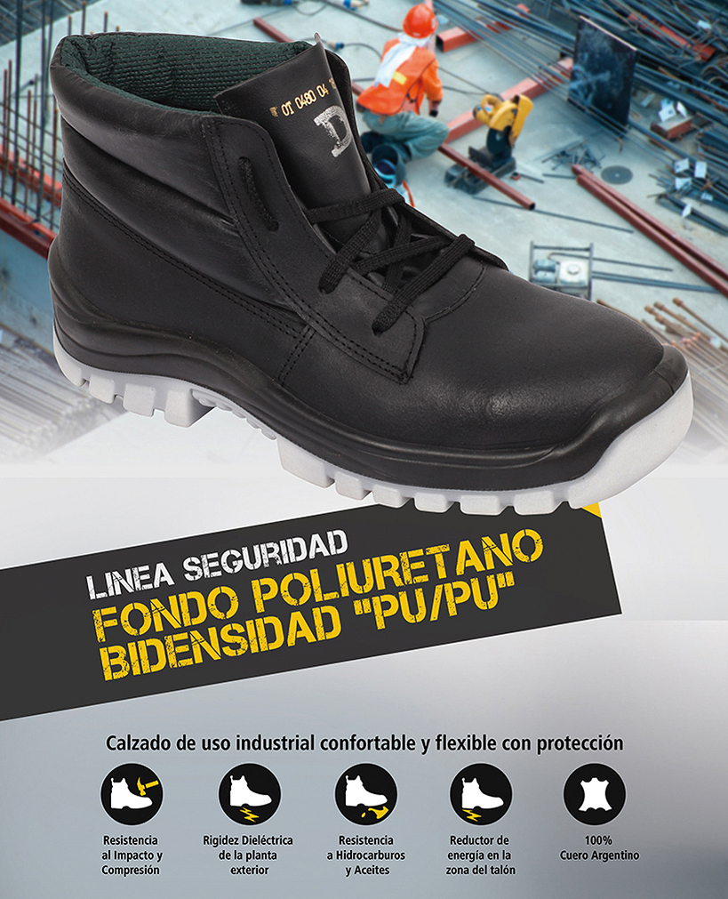
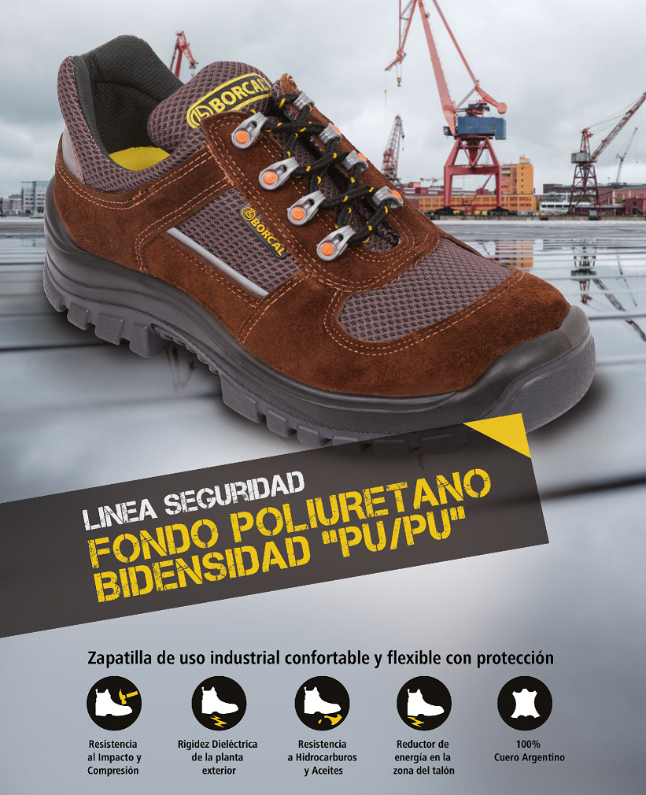

En Borcal, entendemos la importancia de proteger a los operarios en las condiciones más exigentes. Nuestros calzados de seguridad con puntera de acero ofrecen la máxima protección, confort y durabilidad, adaptándose a las necesidades específicas de cada industria. Confía en nuestra experiencia para asegurar el bienestar de tus trabajadores.


